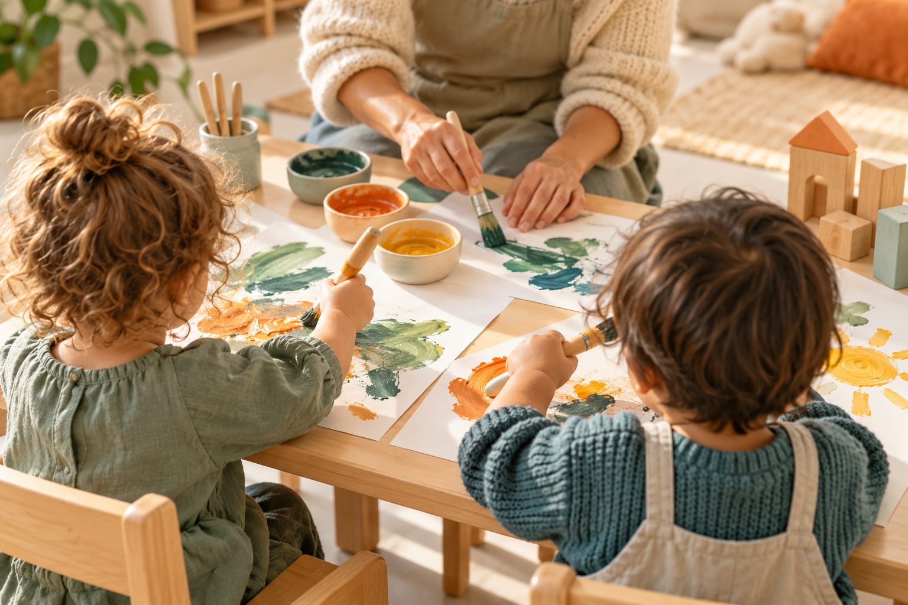

Persoonlijke aandacht
Een vertrouwde begeleider die kijkt, luistert en tijd neemt voor wat je kind nodig heeft.
We begeleiden kinderen met persoonlijke aandacht, rust en vertrouwen. Een herkenbaar dagritme geeft houvast; creatieve activiteiten en ruimte om zelf te proberen nodigen uit tot ontdekken.
Een vertrouwde begeleider die kijkt, luistert en tijd neemt voor wat je kind nodig heeft.
Een herkenbaar dagritme en een rustige omgeving geven houvast bij spelen, eten en uitrusten.
Schilderen, knutselen en zelf iets uitproberen. Kinderen krijgen ruimte voor hun eigen ideeën.
Schilderen, knutselen of zelf iets bouwen: we geven ruimte aan de ideeën van kinderen. Ook een jas aantrekken, samen opruimen en iets opnieuw proberen horen bij het leren van alledag.
Naar de beleidsuitgangspuntenWe zijn dichtbij, herkennen signalen en benoemen emoties. Een kind mag hulp vragen en even op schoot tot het weer verder durft.
We bieden passende keuzes en tijd om te proberen. We helpen waar nodig en nemen het niet meteen over.
Samen spelen gaat met vallen en opstaan. We helpen kinderen bij beurt nemen, grenzen aangeven en rekening houden met elkaar.
Schilderen en knutselen geven kinderen ruimte om materialen te ontdekken en iets eigens te maken. We volgen hun ideeën en begeleiden waar dat nodig is.

Wat geeft je kind rust? Wat helpt bij afscheid nemen? De mentor is je vaste aanspreekpunt voor ontwikkeling en welbevinden. Samen bespreken we rustig wat je kind nodig heeft en hoe het op de opvang gaat.
We leggen ontwikkelingen beknopt vast en bespreken die twee keer per jaar met ouders. Het gesprek wordt gevoerd door de leidinggevende en/of mentor, met de mentor betrokken bij observaties en vervolgafspraken. Bij zorgen nemen we eerder contact op.
Lees hoe we samenwerkenPersoonlijke aandacht, een vertrouwd ritme en ruimte om te groeien. Ontdek wat Kleine Vleugels voor jouw gezin betekent.